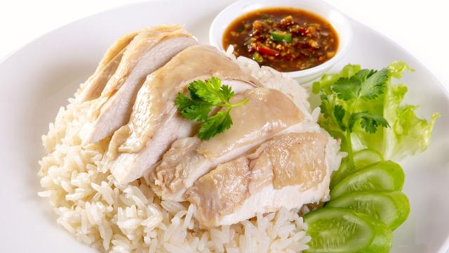

ข้าวมันไก่

ส่วนผสมเครื่องปรุงข้าวมันไก่
- น่องไก่/สะโพกไก่/อกไก่ (ตามชอบ)
- กระเทียม 3 - 4 หัว
- รากผักชี 6 ราก อ่านต่อได้ที่
- ขิงแก่หั่นเป็นแผ่นบาง 6 แผ่น
- พริกไทย 30 เม็ด
- เกลือ 1 ½ ช้อนโต๊ะ
- น้ำตาลกรวด ½ ช้อนโต๊ะ
- ข้าวสารดิบ 2 ถ้วยตวง
- ซีอิ๊วขาว 3 ช้อนโต๊ะ
- น้ำมันพืช ½ ช้อนโต๊ะ
- แตงกวา
- ผักชี
วิธีการทำข้าวมันไก่
-
ต้มน้ำให้เดือด ใส่เกลือลงไป ชิมให้น้ำพอมีรสเค็มกำลังดี
(ช่วยเพิ่มรสชาติให้เนื้อไก่และป้องกันหนังไก่แตกเละ)
เมื่อคนจนเกลือละลายแล้วจึงใส่เนื้อไก่ลงไปโดยไม่ต้องคนน้ำในหม้อ
เมื่อไก่สุกดีแล้วตักชิ้นไก่ออก
เราจะนำน้ำต้มไก่ในหม้อนี้ไปหุงข้าวและปรุงเป็นน้ำซุปภายหลัง
-
นำมันไก่ใส่กระทะ เจียวไปเรื่อย ๆ จนได้น้ำมัน
ช้อนชิ้นมันออกแล้วนำขิงที่หั่นเป็นแว่นบาง ๆ ลงไปผัด ตามด้วยกระเทียม
ผัดให้เข้ากันจนได้กลิ่นหอม
-
นำข้าวหอมมะลิที่ซาวน้ำให้สะอาดแล้วลงไปผัดในน้ำมัน
ผัดให้เข้ากันครู่หนึ่งจึงเทลงหม้อหุงข้าว
จากนั้นนำน้ำซุปไก่ที่ต้มไว้ในขั้นตอนแรกมาหุง
โดยเลือกช้อนเฉพาะส่วนบนที่มีน้ำมันไก่ลอยอยู่ ใช้น้ำอัตราส่วน 1:1
หรือประมาณให้น้ำท่วมข้าวราว 1 นิ้ว
เมื่อหุงเสร็จแล้วจะได้ข้าวมันที่หอมชวนรับประทาน
เตรียมสับไก่โปะหน้าข้าวได้เลย
-
ปรุงน้ำซุปตามรสที่ชอบ โดยใส่หัวไชเท้าลงไปต้มจนสุก
(ใส่หลังนำเนื้อไก่ออกจากหม้อแล้วนะคะ) ปรุงรสด้วยซีอิ้วขาว
เมื่อตักเสิร์ฟจึงโรยด้วยพริกไทยและผักชี
คุณค่าทางโภชนาการ
| ข้าวมันไก่ |
| ปริมาณของอาหาร |
1 จาน |
300 กรัม |
| แคลอรี่ |
700 |
| ไขมัน |
22 กรัม |
| คาโบไฮเดรต |
53 กรัม |
| โปรตีน |
26 กรัม |